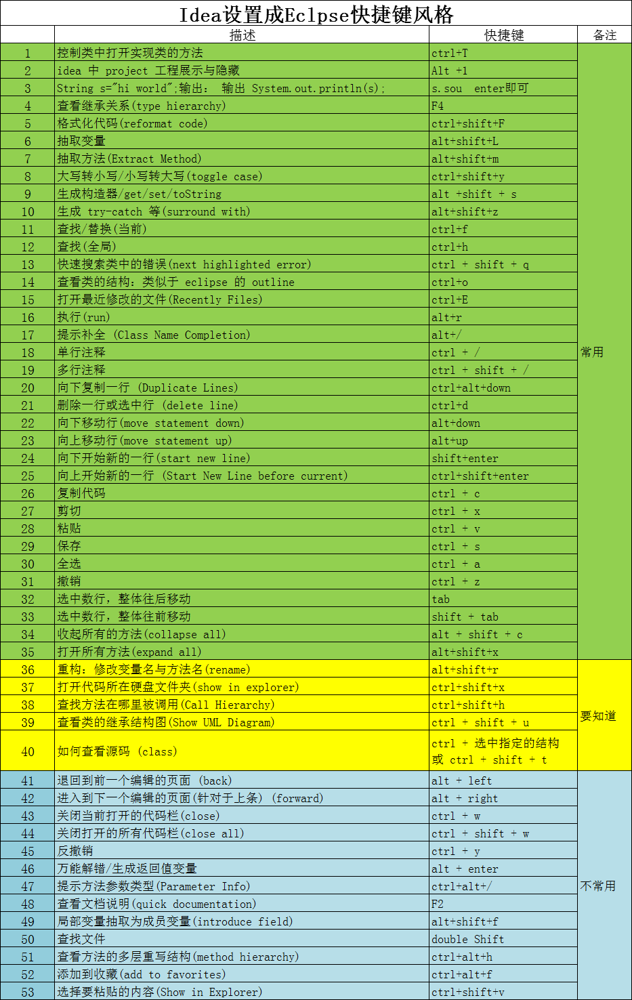

1 找到File>import settings：
2找到下载到的jar导入，全部导入，再设置里的keymap选项里就可以找到wenchy这个设置，选中，应用，便可以使用完全的eclipse快捷键风格了。
———————————————————-
快捷键：
idea中子类实现父接口的方法. shift+alt+p;

Author: Liu
Link: http://www.ghostlib.com/article/202007071200/
Copyright: All articles in this blog are licensed under CC BY-NC-SA 3.0 unless stating additionally.